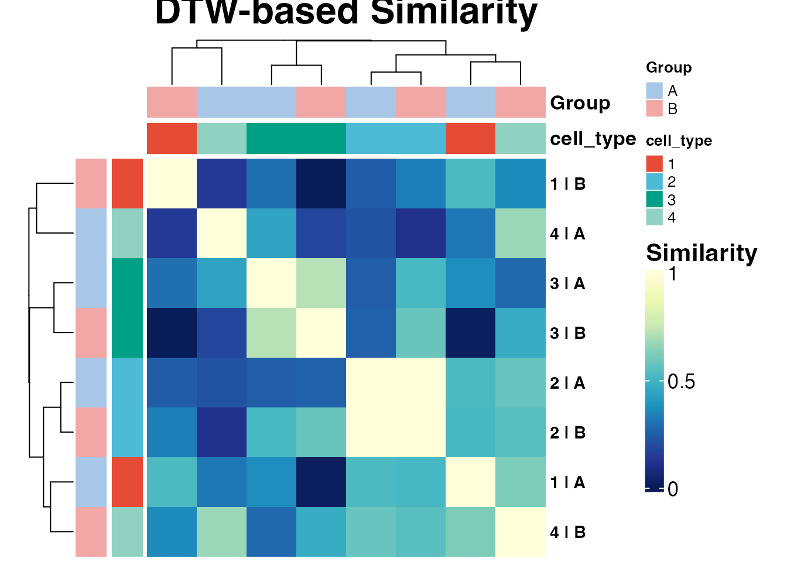
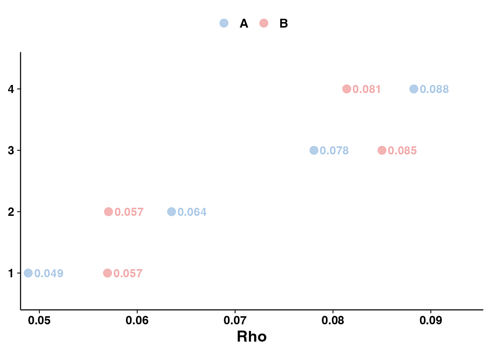

phase-prioritization-dtw-rho.RmdThis tutorial describes two phase-level extension analyses:
These analyses are useful for prioritizing cell types or conditions that show phase-distribution remodeling before downstream gene-level modeling.
library(scRhythmBayes)
data("srb_example_data")
count <- srb_example_data$Count
metadata <- srb_example_data$meta
dim(count)
#> NULL
head(metadata)
#> cell ZT celltype condition T_true Theta_true
#> Cell00001 Cell00001 0 1 A 23.3400755 6.1104175
#> Cell00002 Cell00002 0 1 B 23.7670342 6.2221950
#> Cell00003 Cell00003 0 1 B 0.9221928 0.2414295
#> Cell00004 Cell00004 0 1 B 1.9315598 0.5056812
#> Cell00005 Cell00005 0 1 A 0.9730132 0.2547343
#> Cell00006 Cell00006 0 1 A 1.1848616 0.3101960
table(metadata$celltype, metadata$condition)
#>
#> A B
#> 1 502 498
#> 2 501 499
#> 3 501 499
#> 4 502 498
res_phase <- infer_cell_phase(
count = count,
metadata = metadata,
ZT_by = "ZT",
strata_by = "celltype",
Species = "mouse",
setseed = 1,
Verbose = FALSE
)
head(res_phase)
#> # A tibble: 6 × 7
#> cell ZT_input stratum theta_pred ZT_pred Rbar r_cell
#> <chr> <dbl> <chr> <dbl> <dbl> <dbl> <dbl>
#> 1 Cell00001 0 1 0.0444 0.169 0.999 0.999
#> 2 Cell00002 0 1 6.21 23.7 0.979 0.998
#> 3 Cell00003 0 1 0.570 2.18 0.994 0.998
#> 4 Cell00004 0 1 0.829 3.17 0.991 0.990
#> 5 Cell00005 0 1 6.26 23.9 0.995 0.999
#> 6 Cell00006 0 1 0.553 2.11 0.998 0.999
dtw_res <- run_dtw_similarity(
res_phase = res_phase,
metadata = metadata,
celltype_by = "celltype",
group_by = "condition",
min_cell = 10,
Verbose = FALSE
)
dtw_res
#> scRhythmDTWSimilarity object
#> Combinations: 8
#> Bins: 24
#> Groups: A, B
#> Cell types: 1, 2, 3, 4
#>
#> cell_type Group n_cell combo
#> 1 1 A 502 1 | A
#> 5 1 B 498 1 | B
#> 2 2 A 501 2 | A
#> 6 2 B 499 2 | B
#> 3 3 A 501 3 | A
#> 7 3 B 499 3 | B
#> 4 4 A 502 4 | A
#> 8 4 B 498 4 | B
head(dtw_res$histogram)
#> combo cell_type Group bin bin_start bin_end bin_mid prop
#> 1 1 | A 1 A 1 0.0000000 0.2617994 0.1308997 0.07370518
#> 2 1 | A 1 A 2 0.2617994 0.5235988 0.3926991 0.05179283
#> 3 1 | A 1 A 3 0.5235988 0.7853982 0.6544985 0.03784861
#> 4 1 | A 1 A 4 0.7853982 1.0471976 0.9162979 0.02589641
#> 5 1 | A 1 A 5 1.0471976 1.3089969 1.1780972 0.07370518
#> 6 1 | A 1 A 6 1.3089969 1.5707963 1.4398966 0.03585657
dtw_res$similarity
#> 1 | A 1 | B 2 | A 2 | B 3 | A 3 | B 4 | A
#> 1 | A 1.00000000 0.5258293 0.5254280 0.5121285 0.3678544 0.01576747 0.3168803
#> 1 | B 0.52582928 1.0000000 0.2482149 0.3303387 0.2933876 0.00000000 0.1401936
#> 2 | A 0.52542801 0.2482149 1.0000000 1.0000000 0.2476438 0.25802896 0.2154369
#> 2 | B 0.51212846 0.3303387 1.0000000 1.0000000 0.5154377 0.58143845 0.1062025
#> 3 | A 0.36785437 0.2933876 0.2476438 0.5154377 1.0000000 0.72335525 0.4392088
#> 3 | B 0.01576747 0.0000000 0.2580290 0.5814384 0.7233553 1.00000000 0.1779542
#> 4 | A 0.31688032 0.1401936 0.2154369 0.1062025 0.4392088 0.17795416 1.0000000
#> 4 | B 0.62162323 0.3610806 0.5784490 0.5468284 0.2753267 0.46943003 0.6732601
#> 4 | B
#> 1 | A 0.6216232
#> 1 | B 0.3610806
#> 2 | A 0.5784490
#> 2 | B 0.5468284
#> 3 | A 0.2753267
#> 3 | B 0.4694300
#> 4 | A 0.6732601
#> 4 | B 1.0000000| Output | Meaning |
|---|---|
data |
Merged cell-level phase and metadata table |
histogram |
Circular phase histogram for each celltype-by-group combination |
distance |
Pairwise DTW distance matrix |
similarity |
Scaled 0-to-1 DTW similarity matrix |
annotation |
Annotation table for heatmap rows and columns |
A higher similarity value indicates a more similar inferred phase-distribution profile.
ht_dtw <- plot_dtw_heatmap(
dtw_res = dtw_res
)
ht_dtw
#> scRhythmDTWHeatmap object
#> Matrix type: similarity
#> Matrix dimension: 8 x 8
plot(ht_dtw)
rho_res <- run_phase_rho(
res_phase = res_phase,
metadata = metadata,
celltype_by = "celltype",
group_by = "condition",
theta_by = "theta_pred",
group_levels = c("A", "B"),
min_cell = 10,
Verbose = FALSE
)
rho_res
#> scRhythmPhaseRho object
#>
#> Group-level rho:
#> cell_type Group n_cell rho mean_phase_rad mean_phase_hour rho_mean
#> 1 1 A 502 0.04886511 0.8479853 3.239065 0.05291440
#> 2 1 B 498 0.05696368 0.2951641 1.127444 0.05291440
#> 3 2 A 501 0.06350600 4.2706710 16.312761 0.06028524
#> 4 2 B 499 0.05706447 4.4214902 16.888849 0.06028524
#> 5 3 A 501 0.07805694 4.0629789 15.519436 0.08153357
#> 6 3 B 499 0.08501021 4.0505893 15.472111 0.08153357
#> 7 4 A 502 0.08826392 3.9925954 15.250591 0.08483591
#> 8 4 B 498 0.08140789 4.1121524 15.707265 0.08483591
#>
#> Sample-level group comparison: not available
rho_res$rho_group
#> NULL
p_rho <- plot_phase_rho(rho_res)
p_rho$plot
A larger rho indicates stronger phase concentration. A smaller rho indicates a more dispersed phase distribution.
The example dataset does not contain real biological sample IDs. The following code creates artificial sample labels for demonstration only.
set.seed(1)
meta_rho_test <- metadata
if (!"cell" %in% colnames(meta_rho_test)) {
meta_rho_test$cell <- rownames(meta_rho_test)
}
meta_rho_test$Sample <- NA_character_
sample_per_group <- 4
split_key <- interaction(
meta_rho_test$celltype,
meta_rho_test$condition,
drop = TRUE
)
for (kk in levels(split_key)) {
idx <- which(split_key == kk)
meta_rho_test$Sample[idx] <- sample(
paste0("S", seq_len(sample_per_group)),
size = length(idx),
replace = TRUE
)
}
head(meta_rho_test)
#> cell ZT celltype condition T_true Theta_true Sample
#> Cell00001 Cell00001 0 1 A 23.3400755 6.1104175 S1
#> Cell00002 Cell00002 0 1 B 23.7670342 6.2221950 S2
#> Cell00003 Cell00003 0 1 B 0.9221928 0.2414295 S4
#> Cell00004 Cell00004 0 1 B 1.9315598 0.5056812 S1
#> Cell00005 Cell00005 0 1 A 0.9730132 0.2547343 S4
#> Cell00006 Cell00006 0 1 A 1.1848616 0.3101960 S3
rho_res_sample <- run_phase_rho(
res_phase = res_phase,
metadata = meta_rho_test,
celltype_by = "celltype",
group_by = "condition",
sample_by = "Sample",
theta_by = "theta_pred",
group_levels = c("A", "B"),
min_cell = 10,
Verbose = FALSE
)
head(rho_res_sample$rho_sample)
#> cell_type Group Sample n_cell rho mean_phase_rad mean_phase_hour
#> 1 1 A S1 138 0.03936473 3.0985686 11.835660
#> 2 1 A S2 121 0.10892079 0.9783530 3.737033
#> 3 1 A S3 120 0.12955172 0.3413518 1.303868
#> 4 1 A S4 123 0.01671531 1.7440895 6.661931
#> 5 1 B S1 119 0.07526560 1.3112934 5.008772
#> 6 1 B S2 137 0.14094304 0.2920608 1.115590
dtw_res <- run_dtw_similarity(
res_phase = res_phase,
metadata = metadata,
celltype_by = "celltype",
group_by = "condition",
min_cell = 10,
Verbose = FALSE
)
ht_dtw <- plot_dtw_heatmap(dtw_res = dtw_res)
rho_res <- run_phase_rho(
res_phase = res_phase,
metadata = metadata,
celltype_by = "celltype",
group_by = "condition",
theta_by = "theta_pred",
group_levels = c("A", "B"),
min_cell = 10,
Verbose = FALSE
)
p_rho <- plot_phase_rho(rho_res)
sessionInfo()
#> R version 4.5.1 (2025-06-13)
#> Platform: aarch64-apple-darwin20
#> Running under: macOS Sequoia 15.5
#>
#> Matrix products: default
#> BLAS: /Library/Frameworks/R.framework/Versions/4.5-arm64/Resources/lib/libRblas.0.dylib
#> LAPACK: /Library/Frameworks/R.framework/Versions/4.5-arm64/Resources/lib/libRlapack.dylib; LAPACK version 3.12.1
#>
#> locale:
#> [1] en_US.UTF-8/en_US.UTF-8/en_US.UTF-8/C/en_US.UTF-8/en_US.UTF-8
#>
#> time zone: Asia/Shanghai
#> tzcode source: internal
#>
#> attached base packages:
#> [1] stats graphics grDevices utils datasets methods base
#>
#> other attached packages:
#> [1] scRhythmBayes_0.1.0
#>
#> loaded via a namespace (and not attached):
#> [1] gtable_0.3.6 circlize_0.4.18 shape_1.4.6.1
#> [4] rjson_0.2.23 xfun_0.57 bslib_0.10.0
#> [7] ggplot2_4.0.3 htmlwidgets_1.6.4 GlobalOptions_0.1.4
#> [10] ggrepel_0.9.8 lattice_0.22-9 vctrs_0.7.3
#> [13] tools_4.5.1 generics_0.1.4 stats4_4.5.1
#> [16] parallel_4.5.1 tibble_3.3.1 proxy_0.4-29
#> [19] cluster_2.1.8.2 pkgconfig_2.0.3 Matrix_1.7-5
#> [22] RColorBrewer_1.1-3 S7_0.2.2 desc_1.4.3
#> [25] S4Vectors_0.48.1 lifecycle_1.0.5 compiler_4.5.1
#> [28] farver_2.1.2 circular_0.5-2 textshaping_1.0.5
#> [31] codetools_0.2-20 ComplexHeatmap_2.26.1 clue_0.3-68
#> [34] htmltools_0.5.9 sass_0.4.10 yaml_2.3.12
#> [37] pillar_1.11.1 pkgdown_2.2.0 crayon_1.5.3
#> [40] jquerylib_0.1.4 cachem_1.1.0 iterators_1.0.14
#> [43] boot_1.3-32 foreach_1.5.2 tidyselect_1.2.1
#> [46] digest_0.6.39 mvtnorm_1.3-7 dplyr_1.2.1
#> [49] labeling_0.4.3 fastmap_1.2.0 grid_4.5.1
#> [52] colorspace_2.1-2 cli_3.6.6 magrittr_2.0.5
#> [55] utf8_1.2.6 withr_3.0.2 scales_1.4.0
#> [58] rmarkdown_2.31 matrixStats_1.5.0 otel_0.2.0
#> [61] ragg_1.5.2 png_0.1-9 GetoptLong_1.1.1
#> [64] evaluate_1.0.5 knitr_1.51 IRanges_2.44.0
#> [67] dtw_1.23-2 doParallel_1.0.17 rlang_1.2.0
#> [70] Rcpp_1.1.1-1.1 glue_1.8.1 BiocGenerics_0.56.0
#> [73] rstudioapi_0.18.0 jsonlite_2.0.0 R6_2.6.1
#> [76] systemfonts_1.3.2 fs_2.1.0